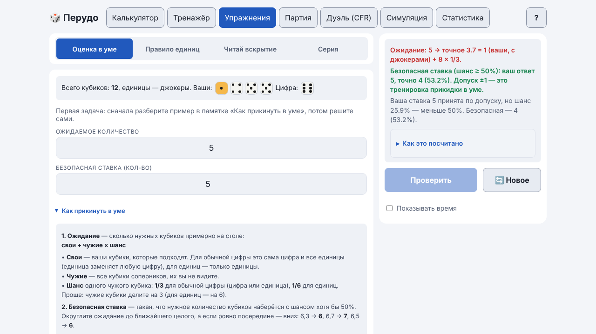
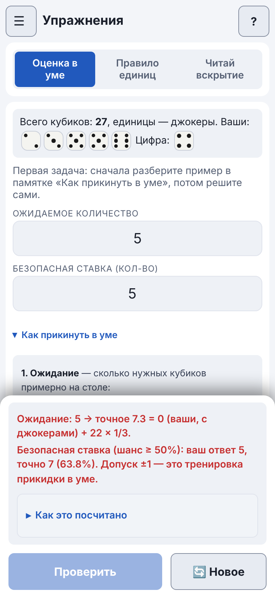

Руководство / Упражнения
Упражнения
Пять упражнений: две тренировки счёта в уме («Оценка в уме», «Правило единиц»), «Читай вскрытие» по ставкам реального раунда, «Серия» с повторяющимися ситуациями одного шанса и викторина «Читай стол». Каждый ответ проверяется сразу.
Оценка в уме
Нужно ответить на два вопроса: сколько кубиков с нужной цифрой ожидать на столе (число с дробью) и какая ставка «безопасна» (шанс не ниже 50%).
- Ожидание считается как свои + чужие × шанс, где шанс равен 1/3 для обычной цифры и 1/6 для единиц.
- Безопасная ставка — это ожидание, округлённое к ближайшему целому (ровно посередине — вниз). Для 0–60 чужих кубиков это совпадает с точным расчётом, и один и тот же приём работает и на большом, и на малом столе.
- В упражнении есть памятка «Как прикинуть в уме» с примером, а после ответа — разбор шагами с числами вашей задачи.
- Подсказок поначалу больше. Первая задача: памятка раскрыта, сначала разберите пример. Вторая и третья: первое число уже подставлено, остаётся найти безопасную ставку (подставленное можно исправить). Дальше всё сами, памятка свёрнута, но открывается одним нажатием. В «Правиле единиц» раскрыта памятка только в первой задаче. Если стереть статистику, подсказки вернутся.
Правило единиц
Какое минимальное количество нужно назвать при переходе на единицы (половина с округлением вверх) и при переходе с единиц на другую цифру (удвоить и прибавить один). Это то самое правило из правил игры, только в виде тренировки.

Читай вскрытие
Третья вкладка: вам показывают ваши кубики и ставки раунда по порядку (соперники названы теми же именами, что и боты в вашей партии; в учебных раундах и в старых сохранённых раундах имена подобраны из списка имён ботов и в одном раунде разные), а затем до трёх вопросов вида «Мария: есть ли в руке хоть одна тройка?». Вопрос только про кубики самого игрока: достаточно одного подходящего, единицы считаются за любую цифру (кроме Палифико), а до всей ставки это отношения не имеет (вопросы про всю ставку и весь стол ищите в «Читай стол»). Вопросы задаются о нескольких случайных ставках соперников, они отмечены в ленте; в карточке «Что вы знаете» видно, сколько кубиков у автора, сколько скрыто от вас и сколько нужной цифры у вас. Ставки раунда идут лентой с подписями «Первая ставка» и «Повышение»; ставки, о которых задан вопрос, обведены и помечены «Оцените». У каждого вопроса карточка «Что вы знаете»: сколько кубиков у игрока, сколько скрыто от вас и сколько нужной цифры у вас (ваши подходящие кубики обведены, джокеры учтены). Флажок «Режим новичка» добавляет в карточку начальный шанс нужной цифры (на одном кубике и на всей руке игрока); по умолчанию он выключен, чтобы подсказка не мешала самостоятельной оценке, выбор запоминается. Под заголовком упражнения короткая задача, а подробности спрятаны в блоке «Как это решать». В подписи сказано, джокеры ли единицы: в раунде Палифико они считаются только за единицу. Отвечайте двумя кнопками: «Да» или «Нет». Кнопка «Проверить» включается, когда отвечены все вопросы; под ответами подсказка, сколько осталось. Единицы-джокеры учитываются. После проверки видны руки при вскрытии, по каждому ответу «верно» или «неверно» и верный вариант на кнопке. Ниже «Серия за сеанс»: сколько вы угадали и сколько угадали бы, отвечая только по числу кубиков у автора, без чтения ставок. Сравнение показывается после 10 ответов; разница меньше трёх ответов считается слишком малой, чтобы судить. Серия считается в пределах открытой страницы и не сохраняется.
Раунды берутся из ваших сыгранных партий, а если их мало, из учебных раундов от ботов программы (они помечены и в статистику не идут). Это вероятностное предположение, а не однозначный вывод: ответ «нет» не означает, что ставка нечестная. Подробности на странице «Объяснения и чтение стола».
В первых двух упражнениях рядом с «Новым» есть необязательный флажок «Показывать время»: он считает время вверх, не ограничивает ответ и не влияет на оценку и статистику.
Серия
Десять однотипных ситуаций с одним и тем же шансом ставки (30, 50 или 70 %). В каждой вы выбираете «Верю» или «Не верю!», а исход разыгрывается случайно по этому шансу. После каждого решения видно, совпало ли оно с исходом, и сразу напоминание, что один исход решение не оценивает. После десятой ситуации появляется итог: сколько раз ставка держалась, сколько решений совпало с исходом и сколько совпало бы при выборе более вероятной стороны. При шансе 50 % оба решения равноценны. Серия не сохраняется и не попадает в статистику.
Читай стол
Чем это отличается от «Читай вскрытия». «Читай вскрытие» разбирает один раунд из ваших партий и задаёт вопросы «да или нет» про руки соперников: удобно, чтобы начать читать ставки. «Читай стол» — основное упражнение на чтение стола: вопросы четырёх видов, баллы, серия из пяти столов и сравнение с ответом «всегда одно и то же», который ставок не читает. Обе вкладки остаются, выбирайте по задаче: для первого знакомства «Читай вскрытие», для проверки уровня «Читай стол».
Викторина по раундам: вам показывают ваши кубики, число кубиков у каждого игрока и ход ставок, а потом задают четыре вопроса о том, что лежит на столе на самом деле. Серия состоит из пяти столов, то есть из двадцати вопросов. Вопросы случайные, из четырёх видов: верна ли последняя ставка, при какой из трёх ставок соперников у игрока меньше всего нужных кубиков в руке, у кого больше кубиков своей цифры и сколько всего кубиков цифры на столе. На первые три вида вопросов отвечайте нажатием на вариант, на вопрос про число кнопками «−» и «+» (счёт начинается с нуля) и «Ответить»: точный ответ даёт 2 балла, ошибка в один кубик 1 балл; за остальные вопросы по 1 баллу, поэтому в разборе баллы показаны как «баллы: 2 из 2», «баллы: 1 из 2» и «баллы: 1 из 1». Если вы ответили верно, пояснение не повторяет ваш ответ, а показывает только детали: кубики по рукам или числа по ставкам. После ответа остаётся одна кнопка «Ответ принят. Идём дальше», а после четвёртого вопроса стола «Ответ принят. Открываем руки». Пока идёт стол, ответы принимаются без оценки: верно или нет и числа по кубикам показываются только при вскрытии (там же напомнено, что вы ответили: «Вы сказали: 4 × ⚃», «Вы выбрали: Юлия», «Вы ответили: не верна»), иначе они подсказывали бы следующие вопросы. Раунды берутся из ваших партий, а недостающие столы разыгрывают боты программы. После четвёртого вопроса стола открываются руки всех игроков: видно, чем закончился раунд, и по каждому вопросу показаны вердикт и пояснение с числами. В конце серии итог: сколько ответов верно из двадцати, сколько баллов набрано и сколько набралось бы, если бы на каждый вопрос каждого вида всегда отвечать одним и тем же ответом (например, всегда «Верна» или всегда число 3). Одна серия короткая, и случайный разброс у неё около двух баллов, поэтому «лучше» или «хуже» итог говорит только при заметной разнице (от трёх баллов), а иначе пишет, что судить рано. На старте показана последняя серия и, если есть, предыдущая, чтобы сравнивать себя с собой. Сверху идёт полоса прогресса по двадцати вопросам. Для каждого вида вопросов есть своя строка, а вид, где вы вышли хуже догадки, назван слабым местом. Законченная серия записывается: на старте видна последняя серия, а в «Статистике» в блоке «Над чем поработать» появляются темы викторины (верность ставки, у кого меньше всего нужных кубиков, кто держит больше, сколько кубиков на столе). Тема считается слабой, только если вы отвечаете хуже, чем при одном и том же ответе на все вопросы темы, например хуже, чем при ответе «Верна» на каждый вопрос; для вопроса про число «верным» считается и ответ с ошибкой в один кубик. Нужно не меньше восьми ответов по теме. Столы разыгрывают и боты программы, и эти ответы тоже учитываются: вопросы проверяют умение читать ставки, а не историю ваших партий.
Как проверяются ответы
- Кнопка «Новое» выдаёт другой вопрос.
- В первых двух упражнениях допуск при проверке ±1: это тренировка прикидки в уме, а не точного счёта. В «Читай вскрытие» ответ проверяется точно по рукам при вскрытии; один ответ мало говорит о качестве, поэтому смотрите серию.
- Если ответ выше безопасного, он принимается по допуску, но разбор добавляет строку про шанс, например: «принята по допуску, но шанс 38% — меньше 50%; безопасная — 6 (61%)».
- Бывает, что безопасной ставки нет (мало чужих кубиков, ставка на единицы). Тогда правильный ответ 0, и разбор так и говорит.
Что считается попыткой. Одна задача — одна запись в статистике. Пустой, нечисловой или дробный ответ (где нужно целое число) не засчитывается: приложение просит ввести ответ. После проверки кнопка «Проверить» недоступна до нажатия «Новое».
На телефоне
Проверка и разбор находятся в панели у нижнего края экрана. Подробный разбор раскрывается внутри неё.
